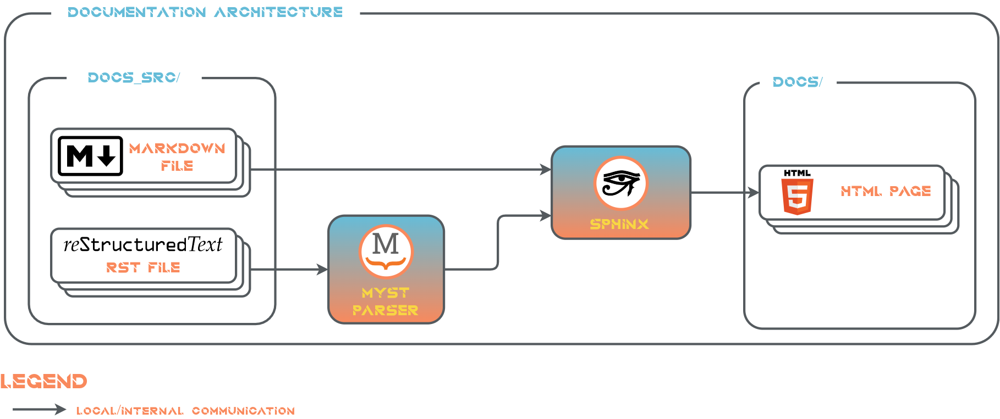

Documentation Architecture#
This section descibes the architecture of the documentation approach for Metron AI ArDaGen.
The documentation is based on following frameworks:
Sphinx: Documentation generator tool.
Markedly Structured Text (MyST): A Sphinx extension to parse a rich and extensible flavour of Markdown.
Mermaid: reST extension framework for text based diagrams creation and plotting.

All documentation files are located in /docs_src. Docs files can be in .rst or .md format. Extended Markdown
formatting using MyST Parser is supported for .md files. The /docs_src folder structure is following:
/docs_src
/_template # It stores custom templates for `sphinx-apidoc` tool.
/api # The folder stores **autogenerated** API documentation using `sphinx-apidoc`.
/arch # All architecture docs reside in here.
/diagram_projects # This folder contains all `draw.io` diagram projects.
/imgs # The folder stores all exported `draw.io` diagram pictures and all others.
/guides # The folder stores how-to guides or other guidelines.
conf.py # Sphinx configuration file.
index.rst # Main docs file.
... # Other documentation files.
Sphinx then loads all .rst and .md files and generates HTML webpages in /docs.
Documentation is generated automatically with every commit using Git Hooks given by pre-commit tool. Other option is to generate docs manually, see the documentation generation guide.
Used Sphinx Extensions#
The list of all used Sphinx extensions could be found in docs_src/conf.py in <extensions> list with a short description.
Automatic API Docs Source Files Generation#
Documentation’s source .rst files of the Metron AI ArDaGen code is generated and maintained automatically.
API docs source files are updated with every commit automatically, based on the latest source code state,
by corresponding Git Hooks. It uses sphinx-apidocs CLI tool with custom templates.
The templates define the structured of generated .rst files. They are located
in /docs_src/_template and they are based on
Jinja templating engine.
Emoticons in Docs#
It is allowed to use emoticons in docs via sphinxemoji Sphinx extension. It can be used in .md and .rst files. Use the following syntax |:emoticon_name:| in .rst files.
It is required to wrap the syntax in a special admonition for .md files:
:::{eval-rst}
|:emoticon_name:|
:::